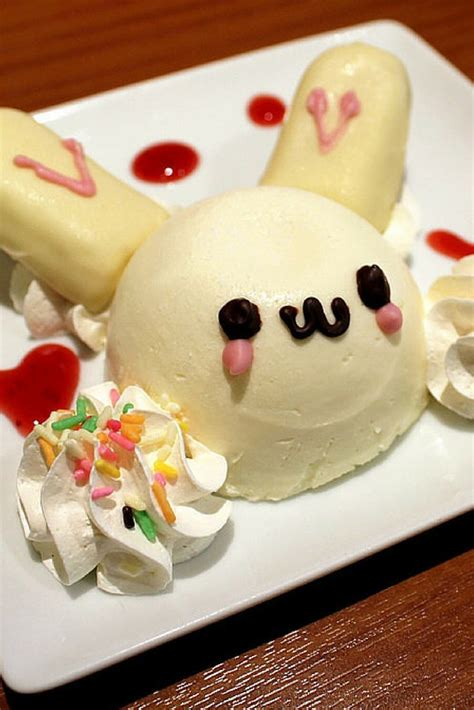

Simple Bunny Panna Cotta Recipe

Back to Home
Ingredients:
- 500 ml heavy cream
- 100 ml whole milk
- 50 g sugar
- 1 teaspoon vanilla extract
- 2.5 g gelatin powder (or 1 sheet)
- 30 ml water
- Black licorice or chocolate for eyes and mouth
- Pink candy or fondant for ears and nose
- Red candies or fruit leather for decorative dots
- Small meringues or whipped cream (for side decoration)
Instructions:
- Prepare gelatin: Sprinkle gelatin over cold water and let sit 5 minutes to bloom.
- Heat cream mixture: Warm the cream, milk, and sugar in a saucepan over medium heat until steaming (don't boil). Remove from heat.
- Dissolve gelatin: Stir the bloomed gelatin into the hot cream mixture until completely dissolved. Add vanilla extract.
- Cool: Let cool to room temperature, then chill in the fridge for 15–20 minutes until slightly thickened but still pourable.
- Mold: Pour into a round bowl or mold for the head and smaller molds or spoons for the ears. Chill until set (2–3 hours or overnight).
- Decorate: Unmold onto a plate. Use licorice or melted chocolate to draw eyes and a cute mouth. Add pink candy for cheeks and a nose. Position the ears and arrange meringues around it.
Serve chilled! The result is a sweet, creamy bunny that's almost too cute to eat.